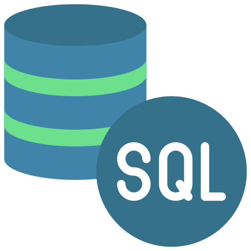
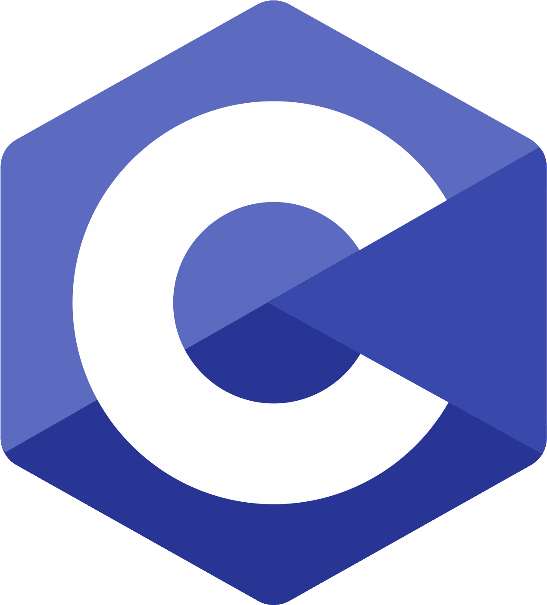
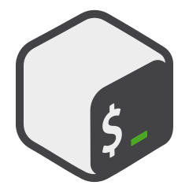

Curieux du fonctionnement des choses et des nouvelles technologies, j’ai pu découvrir différents langages et logiciels tels que Godot pour les jeux-vidéo, Processing pour la programmation créative ou bien Rust pour ses concepts novateurs en terme de fiabilité et de performance.
Étudiant en informatique à l'IUT2 de Grenoble, je suis disponible pour un stage dans le développement logiciel, backend ou système du 20/04/2026 au 26/06/2026, et par la suite une alternance.
-
[2025] Étudiant en informatique
BUT informatique en année spéciale à l'IUT2 de Grenoble
-
[2022 - 2025] Développeur back-end chez Humanfab
Gestion, conception et maintenance de l’API Web et de la base de données de l’entreprise


- 


- 

- 


Travail d’équipe
Autonomie
Adaptabilité
Résolution de problèmes
Fiabilité
Sens du service
Patience